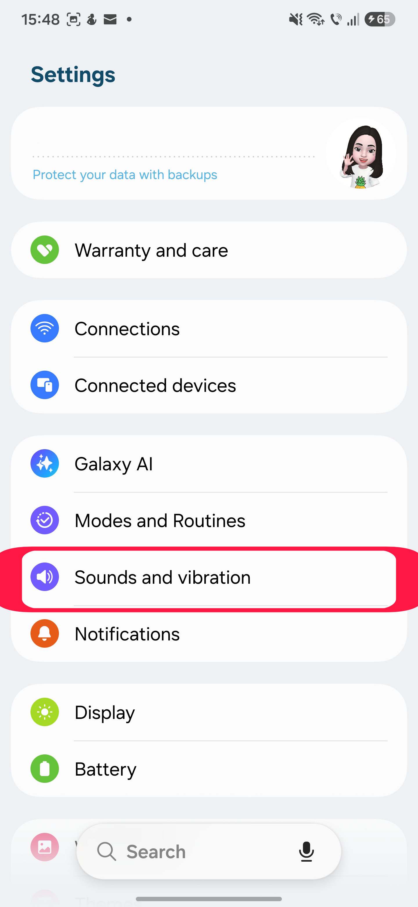
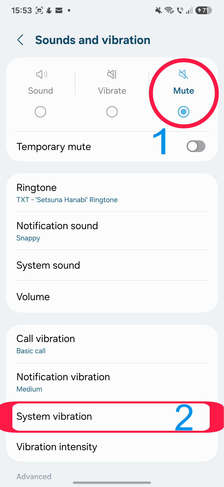

English Experiment
Hello! My name is Miruna Măchiță, and I am a linguistics PhD candidate at the Faculty of Foreign Languages and Literatures of the University of Bucharest. I am conducting an experiment for my PhD research.
Before you begin
Before starting the recording tasks, please adjust your phone's vibration settings. This helps prevent vibrations from interfering with the audio recording.
Follow the instructions for your device. If you are using another brand of phone, the settings may be different. Please refer to your device's settings to find the equivalent vibration controls.
iPhone
1. Open Settings and select Accessibility.

Select Accessibility in Settings.
2. Scroll down to the Physical and Motor section and select Touch.

Select Touch under Physical and Motor.
3. Find Vibration and switch it off. This setting disables vibration on your iPhone, including vibration for calls and notifications.

Turn off Vibration.
Samsung Galaxy
1. Open Settings and select Sounds and vibration.

Select Sounds and vibration.
2. Select Mute in the sound mode options. Then open System vibration.

Select Mute and open System vibration.
3. Move the System vibration intensity slider all the way to the left, to the minimum setting.

Set the System vibration intensity slider to minimum.
You do not need to change the individual vibration feedback options below the slider.
Practice session
You will see a few English words, one at a time.
- Read each word aloud when it appears on the screen.
- Each word will stay on the screen for 4 seconds.
- Read the words in the order shown.
- You do not need to press anything between words. The next word will appear automatically.
This is a short practice session to help you get used to the task. These words will not be included in your main recording.
Practice complete!
Part I – Word reading
You will read 28 English words, one at a time.
- Read each word aloud when it appears on the screen.
- Read the words at your normal speaking speed.
- Each word will stay on the screen for 4 seconds.
- Read the words in the order shown.
Before you start, find a quiet place and make sure your microphone is working.
When you press Start recording, a short countdown will appear. The recording will then start automatically. You do not need to press anything between words.
At the end, you can listen to your recording before downloading it.
● Recording
Recording complete
You can listen to your recording below.
Part II – Passage reading
You will now read a short text aloud, from start to end.
- Read at your normal speaking speed and as naturally as possible.
- If you make a mistake, simply continue reading.
The text will remain visible during the entire task.
When you press Ready, the passage will appear. You will have 5 seconds to prepare before the recording starts automatically.
The recording will continue until you press Finish recording.
They were walking along the narrow path when Matilda noticed a few birds moving among the trees. Their soft singing filled the quiet air, but apart from that, there was very little to see. She had expected Miss Honey’s home to be different somehow, perhaps larger or more welcoming.
“It’s just a farm worker’s cottage,” Miss Honey explained. “You mustn’t expect too much of it. People often think that a home tells you everything about the person who lives there, but that’s not always true.”
Matilda looked at her with interest. “There is a question I’d like to ask,” she said.
“Of course. You can ask me anything you like.”
“How many books have you got in your home?”
“You will see.”
Then they came to a green gate in the hedge. Miss Honey paused with one hand on the gate, then opened it, leaving the gate open behind them.
The cottage was so small that it looked more like a doll’s house than a real home. Its old red bricks had faded in the sun, and the windows were so narrow that Matilda wondered how much light could possibly enter the rooms. A few plants grew beside the path, while two pretty windows looked out over a green spot.
“It’s not much to look at, but it’s where I live, and I’m quite happy here. It’s the perfect place to sleep.”
(Adapted from Roald Dahl – Matilda)
● Recording
Part III – Speech Evaluation
Practice – Understanding the Rating Scale
Before you start, please answer the following two questions to check that you understand the rating scale.
Speaker 1
Listen to the recording
This recording could not be loaded. Please refresh the page and try again.
The speaker is:
Please rate the speaker on all 12 items before continuing.
Speech Evaluation complete
Thank you for completing this section. Please proceed to the final part of the experiment: a short questionnaire.
Part IV – English Pronunciation and Language Experience
The following questions concern your experience with English and your views on English pronunciation. There are no right or wrong answers. Please select the answer that best reflects your opinions or experience.
Thank you for your participation.
You have completed the questionnaire and the experiment.
Please check your phone's vibration settings before continuing.